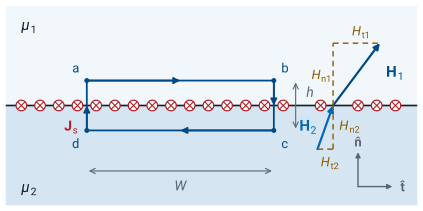
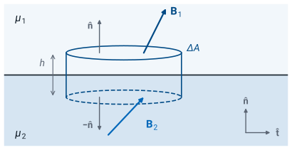
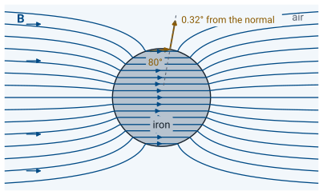

L31 - Magnetic Boundary Conditions#
Magnetic Boundary Conditions
Today we find what the magnetic field must do where one material meets another.
Lesson 31 · Module 3: Magnetostatics · Maj Ellis · Dr. Neil Rogers
Learning Objectives
- I can apply the magnetic field boundary conditions to calculate magnetic fields on both sides of a material boundary.
Lesson 24 found the two conditions the electric field obeys at a material boundary by applying the laws of electrostatics to a thin loop and a thin box. Today we repeat that work for the magnetic field. The two laws of magnetostatics, Ampere’s law and Gauss’s law for magnetism, give one condition on the component of the field along the boundary and one on the component across it. The results look like Lesson 24’s with the permeability in place of the permittivity, with one difference: a current that flows in a thin sheet on the boundary makes the tangential field jump. With the two conditions we can find the field on one side of a boundary from the field on the other, and see why field lines in air meet iron almost along the normal.
Where We Were
The two laws of magnetostatics, in integral form:
Lesson 28 introduced Gauss’s law for magnetism: the flux of the magnetic flux density \(\mathbf{B}\) out of any closed surface \(S\) is zero, because there is no magnetic charge for field lines to start or end on. Lesson 29 derived Ampere’s law for any steady current: the circulation of the magnetic field intensity \(\mathbf{H}\) around any closed path \(C\) equals the current \(I_\text{encl}\) that passes through a surface bounded by the path, with the right-hand rule setting the direction of the current. Today we apply both laws to paths and surfaces of any shape, so we need them in that general form. Inside a material, the permeability \(\mu\), in H/m, ties the two fields together. These three statements play the roles that Gauss’s law, the loop law, and \(\mathbf{D} = \epsilon\mathbf{E}\) played in Lesson 24.
Magnetic Materials
\(\mu = \mu_r\mu_0\), with \(\mu_0 = 4\pi\times10^{-7}\) H/m
Type |
Example |
\(\mu_r\) |
|---|---|---|
Diamagnetic |
Copper |
\(0.99999\) |
Paramagnetic |
Aluminum |
\(1.00002\) |
Ferromagnetic |
Iron |
Hundreds to thousands |
We write the permeability as the relative permeability \(\mu_r\) times the permeability of free space \(\mu_0\). A magnetic field acts on the electrons in every atom, and a material’s \(\mu_r\) records how the atoms respond. In a diamagnetic material, such as copper, the field induces atomic moments that oppose it, by the induction that Lesson 33 introduces, and \(\mu_r\) is slightly less than one. In a paramagnetic material, such as aluminum, the atoms’ own moments line up weakly with the field, and \(\mu_r\) is slightly more than one. In both, \(\mu_r\) differs from one by about \(10^{-5}\), so we treat them, along with air and the polyethylene in a coaxial cable, as having \(\mu = \mu_0\). In a ferromagnetic material, such as iron, nickel, or a ferrite, the atomic moments line up strongly in groups, and \(\mu_r\) runs from hundreds to thousands. Its value depends on the field strength and on the material’s history, which is how a permanent magnet keeps its field. Today we treat each material as having one fixed \(\mu_r\).
The Tangential Field: A Thin Loop

A surface current \(\mathbf{J}_s\), in A/m, flows on the boundary.
We set up the geometry exactly as in Lesson 24. The unit normal \(\hat{\mathbf{n}}\) points from region 2 into region 1, the unit tangent \(\hat{\mathbf{t}}\) lies along the boundary, and each field splits into a tangential component, \(H_{t1}\) or \(H_{t2}\), and a normal component, \(H_{n1}\) or \(H_{n2}\). The boundary can also carry the surface current density \(\mathbf{J}_s\) that Lesson 28 defined: a current that flows in a sheet of negligible thickness, measured in amperes per meter of width across the sheet. The current sheet of Lesson 30 is one example.
We take the rectangular path \(a \to b \to c \to d \to a\), with long sides of length \(W\) parallel to the boundary, one in each region, and short sides of height \(h\) crossing it. The path circulates so that, by the right-hand rule, the current it encloses is the current flowing along \(\hat{\mathbf{n}}\times \hat{\mathbf{t}}\), into the page in the figure. We make \(W\) small enough that the fields and the surface current are uniform along it, then shrink \(h\) toward zero.
Evaluating the Loop
We split the closed path into its four sides. Along side \(ab\) the path runs in the \(+\hat{\mathbf{t}}\) direction through region 1, so the dot product picks out \(H_{t1}\), and the integral is \(H_{t1}\) times the length \(W\). Along side \(cd\) the path runs back in the \(-\hat{\mathbf{t}}\) direction through region 2, which gives \(-H_{t2} W\). The two short sides have length \(h\) and finite fields on them, so their integrals vanish as \(h \to 0\). This is where the magnetic case departs from the electric one: the right-hand side of Ampere’s law is the current through the loop, not zero. As \(h \to 0\), any current spread through the volume of either material passes through an area \(W h\) that vanishes. Only a surface current survives the limit. The part of \(\mathbf{J}_s\) that crosses the loop is its component along the loop’s normal, \(\hat{\mathbf{n}}\times \hat{\mathbf{t}}\), and the current through the loop is that component times the width \(W\).
The Tangential Condition
With no surface current, tangential \(\mathbf{H}\) is continuous.
Dividing by \(W\) gives the first line: the tangential component of \(\mathbf{H}\) jumps by the surface current that flows at right angles to it. The second line says the same thing for every tangent direction at once. The scalar triple product rewrites the first line as \(\hat{\mathbf{t}}\cdot\left(\mathbf{H}_1 - \mathbf{H}_2\right) = \hat{\mathbf{t}}\cdot\left(\mathbf{J}_s\times\hat{\mathbf{n}}\right)\). That holds for every \(\hat{\mathbf{t}}\) in the boundary, so the tangential part of \(\mathbf{H}_1 - \mathbf{H}_2\) equals \(\mathbf{J}_s\times\hat{\mathbf{n}}\). Crossing \(\hat{\mathbf{n}}\) into both sides removes the normal part on the left and, since \(\mathbf{J}_s\) lies in the boundary, returns \(\mathbf{J}_s\) on the right. Between two ordinary materials no current flows in a sheet on the boundary, \(\mathbf{J}_s = 0\), and the tangential component of \(\mathbf{H}\) is the same on both sides, just as tangential \(\mathbf{E}\) was in Lesson 24.
Check: The Current Sheet
Sheet \(\mathbf{J}_s = \hat{\mathbf{x}} J_s\) in the plane \(z = 0\), free space on both sides, \(\hat{\mathbf{n}} = \hat{\mathbf{z}}\):
Lesson 30 used Ampere’s law to find the field of an infinite current sheet: a uniform field of magnitude \(J_s/2\) on each side, parallel to the sheet and at right angles to the current, pointing in opposite directions on the two sides. For a sheet carrying current in the \(+\hat{\mathbf{x}}\) direction, the right-hand rule gives \(-\hat{\mathbf{y}}\) above and \(+\hat{\mathbf{y}}\) below. The tangential field jumps by \(J_s\) from one side to the other, and the tangential condition returns the sheet’s current exactly. The condition is the same Ampere’s law applied to a smaller loop, so we expect them to agree; the agreement checks the signs and the direction of \(\hat{\mathbf{n}}\).
The Normal Field: A Thin Pillbox

Shrink the height: \(h \to 0\).
To relate the normal components, we apply Gauss’s law for magnetism to the same pillbox Lesson 24 used: a short cylinder with two flat faces of area \(\Delta A\) parallel to the boundary, one in each region. We make \(\Delta A\) small enough that \(\mathbf{B}\) is uniform over each face, and then shrink the height \(h\) toward zero. Unlike Lesson 24, no surface term appears: the right-hand side of Gauss’s law for magnetism is zero for every closed surface.
Evaluating the Pillbox
The closed surface has three parts. On the top face, in region 1, the outward normal is \(\hat{\mathbf{n}}\), so the flux is the normal component \(B_{n1}\) times the area. On the bottom face, in region 2, the outward normal is \(-\hat{\mathbf{n}}\), so the flux is \(-B_{n2}\ \Delta A\). The curved side has an area proportional to \(h\), and its flux vanishes as \(h \to 0\). The three fluxes sum to zero, as they do for every closed surface.
The Normal Condition
Then \(\mu_1 H_{n1} = \mu_2 H_{n2}\): normal \(\mathbf{H}\) jumps.
Dividing by \(\Delta A\) gives the normal boundary condition: the normal component of \(\mathbf{B}\) is the same on both sides of every boundary. Lesson 24’s normal condition had the surface charge on its right-hand side; this one has zero, because no magnetic charge exists to sit on a surface. Writing \(\mathbf{B} = \mu\mathbf{H}\) on each side shows that the normal component of \(\mathbf{H}\) is discontinuous: it is smaller in the material with the larger permeability, by the ratio \(\mu_1/\mu_2\).
Electric and Magnetic Conditions
Tangential |
Normal |
|
|---|---|---|
Electric |
\(E_{t1} = E_{t2}\) |
\(D_{n1} - D_{n2} = \rho_s\) |
Magnetic |
\(\hat{\mathbf{n}}\times\left(\mathbf{H}_1 - \mathbf{H}_2\right) = \mathbf{J}_s\) |
\(B_{n1} = B_{n2}\) |
The table sets today’s two conditions beside Lesson 24’s. In each row the tangential condition comes from a loop law and the normal condition from a Gauss’s law. \(\mathbf{H}\) takes the place of \(\mathbf{E}\), \(\mathbf{B}\) the place of \(\mathbf{D}\), and \(\mu\) the place of \(\epsilon\). The sources trade places: in electrostatics a surface charge makes the normal field jump, and in magnetostatics a surface current makes the tangential field jump. At a boundary between two materials with no surface charge and no surface current, the two sets of conditions have the same form, and so the fields bend in the same way.
How the Field Bends
Measure each angle from the normal, with \(\mathbf{J}_s = 0\):
The field leans farther from the normal in the larger \(\mu\).
Let \(\theta_1\) and \(\theta_2\) be the angles between the field and the normal on each side. In a material with one fixed \(\mu\), \(\mathbf{B}\) and \(\mathbf{H}\) point the same way, so each angle describes both fields. The tangent of each angle is the tangential component over the normal component. In the ratio of the two tangents, the tangential components cancel, because they are equal when no surface current flows. The normal components leave \(H_{n2}/H_{n1}\), which the normal condition sets to \(\mu_1/\mu_2\). The result is Lesson 24’s with \(\mu\) in place of \(\epsilon\). What differs is the size of the ratio: the permittivities in Lesson 24 differed by factors of two to ten, but a ferromagnetic material can have a permeability a thousand times that of air.
The Field at a Magnetic Boundary
The widget is Lesson 24’s, run for the magnetic field. It draws the field crossing from region 1, above, into region 2, below, with no surface current on the boundary. The relative permeability sliders run on a logarithmic scale from \(1\) to \(1000\). The bold arrows are \(\mathbf{H}_1\) and \(\mathbf{H}_2\) at one point, drawn to scale, and the dashed lines are their components. The thin lines are lines of \(\mathbf{H}\), spaced so that closer lines mean a stronger field: they spread apart in the material, where \(\mathbf{H}\) is weaker, and some lines of \(\mathbf{H}\) end at the boundary. The default is air over a material with \(\mu_r = 100\), with the field \(10^\circ\) from the normal in the air. In the material the field leans out to \(86.8^\circ\), and \(\vert\mathbf{H}_2\vert\) drops to \(0.174\) of \(\vert\mathbf{H}_1\vert\). Turn on Show B and the arrows and thin lines switch to \(\mathbf{B}\). Now the normal components match, every line continues across the boundary, and the lines crowd together in the material, where \(\vert\mathbf{B}_2\vert\) is \(17.4\) times \(\vert\mathbf{B}_1\vert\). Raise \(\mu_{r2}\) to \(1000\) and the field inside runs almost along the boundary unless it arrives exactly along the normal.
High-Permeability Cores

Outside, at \(\mu_r = 1000\): \(\tan\theta_\text{air} = \tan\theta_\text{iron}/1000\).
The figure shows an iron cylinder with \(\mu_r = 1000\) placed in a uniform field. Its field lines come from solving Laplace’s equation around the cylinder, a calculation this course does not derive; we use only what it shows. Inside the cylinder the field is uniform and runs straight across it, so at a point on the surface the angle from the normal inside is the angle around the cylinder. The bending relation turns any angle inside up to \(85^\circ\) into an angle in the air under one degree from the normal: at the marked point, \(80^\circ\) inside becomes \(0.32^\circ\) outside. Only a field that runs within a degree or two of the surface inside leaves at a larger angle; \(89^\circ\) gives \(3.3^\circ\). The lines of \(\mathbf{B}\) therefore bend in the air to meet the iron almost along the normal, and the cylinder draws in flux from a region wider than itself. The same solution gives the flux density inside as \(2\mu_r/(\mu_r + 1) = 2.00\) times the applied field, which the figure shows as lines about twice as close together inside as far away. This is the magnetic counterpart of the field at a conductor in Lesson 24, and it is why we wind transformers and inductors on iron or ferrite cores: the core guides the field along its own path.
Worked Example: A Boundary with Surface Current
Region 1, \(z < 0\): \(\mu_0\), \(\mathbf{H}_1 = \hat{\mathbf{x}} + \hat{\mathbf{y}}2 + \hat{\mathbf{z}}3\) A/m. Region 2, \(z > 0\): \(4\mu_0\). \(\mathbf{J}_s = \hat{\mathbf{x}}4 + \hat{\mathbf{y}}5\) A/m.
Worked example — the field across a boundary that carries current
The plane \(z = 0\) separates region 1, \(z < 0\), with \(\mu = \mu_0\), from region 2, \(z > 0\), with \(\mu = 4\mu_0\). The boundary carries a surface current \(\mathbf{J}_s = \hat{\mathbf{x}}4 + \hat{\mathbf{y}}5\) A/m, and next to it in region 1, \(\mathbf{H}_1 = \hat{\mathbf{x}} + \hat{\mathbf{y}}2 + \hat{\mathbf{z}}3\) A/m. Find \(\mathbf{H}_2\).
The normal points from region 2 into region 1, so \(\hat{\mathbf{n}} = -\hat{\mathbf{z}}\). The \(z\) components are the normal components, and the \(x\) and \(y\) components are the tangential ones. For the tangential condition we write \(\mathbf{H}_1 - \mathbf{H}_2\) with unknown components and cross \(-\hat{\mathbf{z}}\) into it:
The \(z\) part of \(\mathbf{H}_1 - \mathbf{H}_2\) drops out, because \(\hat{\mathbf{z}}\times\hat{\mathbf{z}} = 0\). Matching components gives \(2 - H_{2y} = 4\), so \(H_{2y} = -2\) A/m, and \(-(1 - H_{2x}) = 5\), so \(H_{2x} = 6\) A/m. The normal condition equates the normal components of \(\mathbf{B}\):
so \(\mathbf{H}_2 = \hat{\mathbf{x}}6 - \hat{\mathbf{y}}2 + \hat{\mathbf{z}}0.75\) A/m. As a check, the normal flux density is \(\mu_0 \times 3 = 3.77\ \mu\)T on both sides. The surface current changed the tangential field from \(\hat{\mathbf{x}} + \hat{\mathbf{y}}2\) to \(\hat{\mathbf{x}}6 - \hat{\mathbf{y}}2\); without it, the tangential components would match.
Summary
Symbol / idea |
What it is |
Result |
|---|---|---|
\(\hat{\mathbf{n}}\) |
Unit normal, from region 2 into region 1 |
|
\(\mathbf{J}_s\) |
Surface current density, in A/m (Lesson 28) |
|
Permeability |
\(\mu = \mu_r\mu_0\) |
\(\mu_r \approx 1\) except in ferromagnetic materials |
Tangential condition |
From Ampere’s law on a thin loop |
\(\hat{\mathbf{n}}\times\left(\mathbf{H}_1 - \mathbf{H}_2\right) = \mathbf{J}_s\) |
Normal condition |
From Gauss’s law for magnetism on a thin pillbox |
\(B_{n1} = B_{n2}\) |
No surface current |
Two ordinary materials |
\(H_{t1} = H_{t2}\), \(\mu_1 H_{n1} = \mu_2 H_{n2}\) |
Bending |
Angle from the normal |
\(\frac{\tan\theta_1}{\tan\theta_2} = \frac{\mu_1}{\mu_2}\) |
Iron |
\(\mu_r\) in the hundreds to thousands |
Field lines meet it almost along the normal |
Practice
Where This Is Going
Lesson 32: the Magnetostatics Lab.
Module 4: a wave at a boundary satisfies Lesson 24’s and today’s conditions at once, which sets the reflected and transmitted fields.
With today’s two conditions, we can find the magnetostatic field from its currents, with the Biot-Savart law or Ampere’s law, and carry it across a material boundary. Lesson 32 is the Magnetostatics Lab. In Module 4 the fields change in time, the electric and magnetic fields drive each other, and a wave that reaches a boundary has to satisfy Lesson 24’s conditions and today’s at the same time. Those four conditions decide how much of the wave reflects and how much passes through.